4. Templates e formulários
Até agora, as views geravam suas próprias respostas: texto, JSON e algumas tags HTML escritas como string. Em uma aplicação MVC, gerar a página é o papel da V, que o [Django] chama de template: um arquivo que descreve a página, com marcadores de posição para os dados que a view lhe passa — o contexto do template (o M, modelo, do MVC; veja a introdução).
O [Django] tem seu próprio engine de templates e sua própria linguagem de templates, a DTL (Django Template Language). Ele também pode usar outros engines, como o [Jinja2], o usado pelo [Flask] (configuração [TEMPLATES]); este documento se concentra na DTL, que todas as aplicações [Django] utilizam. Um template é um arquivo de texto, neste caso HTML (dada a extensão [.html]), armazenado em uma pasta chamada [templates], na qual três tipos de tags são interpretados no servidor:
- [{{ variable }}]: o valor de uma variável de contexto, inserido na página;
- [{% tag %}]: uma tag que controla o engine: condição ([{% if %}]), laço ([{% for %}]), herança de templates ([{% extends %}], [{% block %}]), inclusão ([{% include %}]), criação de uma URL ([{% url %}])...;
- [{# comment #}]: um comentário que não aparece na página gerada. Ele cabe em uma única linha; um comentário de várias linhas é escrito entre as tags [{% comment %}] e [{% endcomment %}] .
Todo o resto é copiado literalmente. As expressões não são escritas em [Python], mas na linguagem deliberadamente limitada da DTL: [model.title] refere-se à chave [title] de um dicionário, ou ao atributo [title] de um objeto, ou ao elemento [title] de uma lista ([Django] tenta nessa ordem) e, se for um método, [Django] o chama sem nenhum parâmetro; os filtros transformam um valor ([name|upper] coloca um nome em maiúsculas); as tags executam ações. É só isso: a DTL não tem operadores aritméticos, nem chamadas de função com parâmetros, nem atribuições. Isso é proposital: os criadores do [Django] queriam que os templates pudessem ser escritos por designers gráficos, sem o risco de a lógica da aplicação se infiltrar nas páginas. Um cálculo é, portanto, feito em [Python] — na view ou em um método de um objeto do contexto — e o template apenas exibe o resultado. As linguagens do [Twig] ([Symfony]) e do [Jinja2] ([Flask]), que foram inspiradas nela, são mais permissivas: efetuam cálculos ([total / count]) e chamam funções com parâmetros. Por fim, um template não é analisado de novo a cada requisição: em seu primeiro uso, o [Django] o analisa e o transforma em uma lista de nós — um objeto [Python] — que mantém na memória e reutiliza depois (no modo de depuração, ele o analisa de novo se tiver sido modificado). Veremos a aparência dessa lista.
4.1. Exemplo 13: um primeiro template
4.1.1. A configuração: config/settings.py
O engine de templates é configurado por meio da configuração [TEMPLATES]:
- Linhas 19–24: [TEMPLATES] é uma lista de engines de templates, cada um descrito por um dicionário. Aqui há apenas um: [BACKEND] refere-se ao engine [Django] (DTL); [DIRS] é a lista de pastas em que ele procura os templates: a pasta [templates] do projeto. A configuração também pode instruir o engine a procurar templates na pasta [templates] de cada aplicação listada em [INSTALLED_APPS] ([APP_DIRS: True], exemplo 18): é assim que uma aplicação reutilizável fornece seus próprios templates.
Os templates ficam em uma subpasta chamada [pages], que recebe o nome da aplicação: é uma prática padrão, que evita que duas aplicações tenham, cada uma, um template [index.html] e que um sobrescreva o outro.
4.1.2. O contexto do template: pages/viewmodels.py
O contexto de um template é um dicionário [Python]. Aqui, ele terá apenas uma entrada, [model], um objeto imutável da classe [PageModel] (veja o Exemplo 03), que contém as três informações que o template exibirá. Não é obrigatório definir o contexto de um template por meio de uma classe: poderiam ser passadas três variáveis separadas ao template. No entanto, uma classe documenta o que o template espera e permite que o editor verifique o código da view. Essa é a abordagem que o estudo de caso seguirá, no qual cada página importante tem sua própria classe de template.
4.1.3. Views: pages/views.py
- Linhas 16–20: a view constrói o modelo. [timezone.localtime()], do módulo [django.utils.timezone], retorna a hora atual no fuso horário da aplicação (configuração [TIME_ZONE], [Europe/Paris]); [strftime] a formata: [%H] para as horas, [%M] para os minutos, [%S] para os segundos;
- Linha 21: o atalho [render] (do módulo [django.shortcuts], exemplo 04) faz o engine de templates gerar a página. Ele recebe a requisição, o nome do template (o caminho do arquivo, relativo a uma das pastas de templates) e o contexto: um dicionário em que cada chave se torna uma variável do template — neste caso, uma só: [model]. [render] retorna um objeto [HttpResponse], cujo corpo é a página renderizada (do tipo [text/html]);
- linhas 27–29: outro template, com uma variável diferente ([name]). O parâmetro [status] de [render] especifica o código da resposta: neste caso, 404, para uma página de erro personalizada;
- linhas 30–34: o mesmo template da view [index], com um modelo diferente. Essa é a vantagem de separar as views dos templates: um único template pode ser usado por várias views.
As rotas ([pages/urls.py]) associam [/] à view [index], e [/hello/<str:name>] à view [hello].
4.1.4. O template: templates/pages/index.html
- linha 5: um comentário da DTL;
- linha 6: [{{ model.title }}] insere o valor do atributo [title] da variável [model]. O ponto é o operador de acesso da DTL, enquanto o [Python] escreveria [model.title] ou [model["title"]], conforme o caso.
Tudo o que é inserido por [{{ }}] é escapado: os caracteres [<], [>], [&], ["] e ['] são substituídos por suas entidades HTML. Esse é o papel que a função [format_html] desempenhava no Exemplo 09, mas desta vez é automático: um template, portanto, não pode inserir por descuido na página o HTML fornecido por um usuário.
4.1.5. O template: templates/pages/unknown.html
Um template não precisa aceitar um objeto: a variável [name] é uma string.
4.1.6. Execução
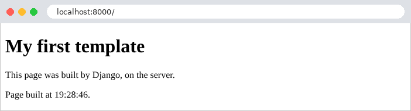
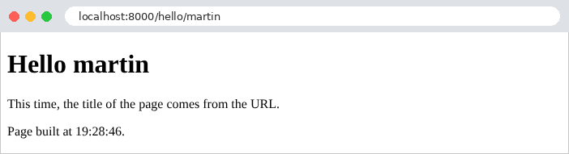
A hora exibida é a do fuso horário da aplicação. A resposta bruta mostra como o engine funciona: as tags [{{ }}] foram substituídas por seus valores, e o comentário desapareceu (deixando para trás uma linha vazia com sua indentação).
A página de erro “personalizada”, seguida de um nome contendo HTML e um apóstrofo ([<b>martin'], codificado como URL):
A tag [<b>] foi escapada, sem que a view ou o template precisassem fazer nada (o apóstrofo também foi escapado: [']). Aqui está, por fim, o template como o [Django] o armazena na memória. O comando [python manage.py shell] abre um console [Python] no qual o [Django] está pronto; a opção [-c] faz com que ele execute algumas instruções:
O template se tornou uma lista de nós: trechos de texto ([TextNode], cuja exibição é truncada), copiados como estão, e variáveis ([VariableNode]), cujos valores são procurados no contexto e depois escapados. O comentário não deixou nenhum nó. Gerar a página consiste em percorrer essa lista e remontar os fragmentos de texto. Um template é, portanto, simplesmente uma maneira mais segura e legível de escrever uma função [Python] que gera HTML.
4.2. Exemplo 14: a linguagem de templates
Este exemplo reúne as principais construções da DTL em um único template.
4.2.1. O modelo e a view
O modelo do template é descrito por três data classes imutáveis:
- linha 24: [str | None]: uma string ou [None] (exemplo 06);
- linhas 28–29: listas de objetos [Product];
- linhas 34–40: como a DTL não pode efetuar cálculos, os cálculos exigidos pelo template (preço total, preço médio) são métodos do modelo. O decorador [@property] transforma um método em uma propriedade: ela é lida como um atributo, sem parênteses ([model.total]), e é assim que a DTL a enxergará. Para simplificar, os preços aqui são do tipo [float] (o Exemplo 06 mostrou por que preferimos centavos inteiros).
O modelo contém valores de vários tipos: strings, [None], booleanos, listas de objetos, listas vazias e objetos que contêm outros objetos.
A view constrói o modelo usando parâmetros nomeados (veja o Exemplo 02): cada valor é precedido pelo nome do atributo a que se destina, o que torna a chamada legível apesar do número de parâmetros.
4.2.2. O template: templates/basics/index.html
- Linhas 9–13: um comentário de várias linhas;
- linha 14: um valor [None] é exibido... [None]: essa é a representação textual de [None]. O filtro [default] substitui um valor “vazio” ([None], string vazia, 0, lista vazia...) por um valor padrão. Um filtro é aplicado usando uma barra vertical e pode receber um parâmetro opcional após dois-pontos: [value|filter:"parameter"]. Uma variável que não existe de forma alguma no contexto ([model.unknown]) seria exibida como uma string vazia, sem erro;
- linhas 16–17: [{{ }}] escapa o HTML (2a); o filtro [safe], por sua vez, insere o valor como está, sem escapar (2b). [safe] é reservado ao HTML gerado pela própria aplicação, nunca à entrada do usuário. A tag [{% autoescape off %}] desativa o escape em uma seção inteira do template;
- linhas 19–23: uma condição: [{% if %}], [{% elif %}], [{% else %}], [{% endif %}]. Cada bloco é fechado por uma tag [{% end... %}]. Uma condição pode usar os operadores [==], [!=], [<], [>], [<=], [>=], [in], [not], [and], [or];
- linhas 27–33: um laço [{% for ... in ... %}] ... [{% endfor %}]. Dentro do laço, a variável especial [forloop] descreve o estado do laço: [forloop.counter0] (o número da iteração, começando em 0), [forloop.counter] (começando em 1), [forloop.first], [forloop.last] (verdadeiros na primeira e na última iteração), [forloop.revcounter] (o número de iterações restantes). As variáveis de fora do laço ([model.name], [model.currency]) continuam acessíveis;
- Linha 29: o filtro [yesno] seleciona um texto conforme um valor seja verdadeiro ou falso: seus dois textos (um terceiro, opcional, seria usado para [None]) são separados por vírgula. É o equivalente, na DTL, de uma expressão condicional;
- linha 37: um laço [for] pode ter um bloco [{% empty %}], executado se a lista estiver vazia. Isso é mais simples do que um [{% if %}] que testasse o tamanho da lista;
- Linhas 43–46: a tag [{% with %}] cria uma variável válida até [{% endwith %}]: neste caso, o número de produtos, calculado pelo filtro [length] (o número de elementos de uma lista ou de caracteres de uma string);
- Linhas 44–45: as propriedades calculadas do modelo. O filtro [floatformat] arredonda um número — [floatformat:2] — para duas casas decimais. Ele formata o número segundo as convenções do idioma da aplicação ([LANGUAGE_CODE]): o separador decimal é formatado para o inglês. Todos os números inseridos em uma página são formatados dessa maneira: o [Django] formata números e datas segundo o idioma ativo (em francês, [12.5] se tornaria [12,5]);
- linha 48: o ponto atravessa objetos ([model.address.city]), e o filtro [upper] coloca uma string em maiúsculas (tratando corretamente os caracteres acentuados);
- linha 50: a tag [{% verbatim %}] copia seu conteúdo sem interpretá-lo: isso é útil quando uma página contém chaves destinadas a um framework [JavaScript].
A DTL tem cerca de sessenta filtros ([lower], [capfirst], [title], [truncatechars], [join], [slice], [first], [last], [date], [time], [linebreaks], [urlize], [pluralize], [add], [divisibleby], [escape], [json_script]...) e cerca de trinta tags ([if], [for], [with], [url], [now], [cycle], [firstof], [include], [extends], [block], [load], [csrf_token], [spaceless]...); as aplicações do [Django] adicionam outros ([static], [translate]...), e a aplicação pode escrever os seus próprios (Exemplo 16).
4.2.3. Execução
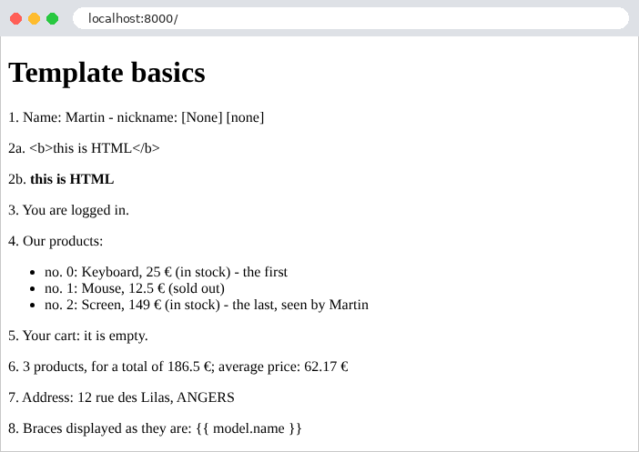
A página gerada:
Os comentários e as tags desapareceram, mas deixam para trás seus espaços e quebras de linha: o [Django] não remove nenhum espaço em branco. Isso não tem efeito: o navegador ignora esses espaços. (A tag [{% spaceless %}] removeria os espaços entre as tags HTML em uma seção do template.) Os números foram escritos no estilo inglês ([12.5], [186.5]), embora o template não tenha exigido isso.
4.3. Exemplo 15: template pai, fragmentos, arquivos estáticos
As páginas de um site costumam compartilhar a mesma estrutura: um cabeçalho, uma barra de navegação, um rodapé e as mesmas folhas de estilo. Em vez de repetir essa estrutura em cada template, ela é escrita uma só vez em um template pai (também chamado de layout), que as páginas estendem. Este exemplo também usa o [Bootstrap], o framework CSS mais utilizado, para o layout.
4.3.1. Arquivos estáticos
Uma página HTML referencia outros arquivos: folhas de estilo, scripts [JavaScript] e imagens. Esses arquivos, que o servidor envia como estão, são chamados de arquivos estáticos. Com o [Django], eles ficam em pastas [static] (a pasta do projeto e as pastas das aplicações), e a aplicação [django.contrib.staticfiles] cuida deles. A configuração:
- linhas 14–19: a aplicação [django.contrib.staticfiles], uma das aplicações incluídas no [Django];
- linhas 21–34: o engine de templates, com dois context processors, descritos mais adiante;
- linha 37: [STATIC_URL], o prefixo da URL dos arquivos estáticos: o arquivo [css/styles.css] estará disponível na URL [/static/css/styles.css];
- Linhas 40–43: [STATICFILES_DIRS], a lista de pastas de arquivos estáticos do projeto (além das pastas [static] das aplicações). A primeira é a do exemplo. A segunda é a pasta [examples/common/static], que contém o [Bootstrap]: em vez de incluir uma cópia em cada exemplo, os exemplos 15 a 28 a compartilham (veja a introdução). O [Django] procura um arquivo em todas essas pastas, em ordem, e retorna o primeiro encontrado.
No modo de depuração, o servidor de desenvolvimento serve ele mesmo os arquivos estáticos, usando a aplicação [staticfiles]: uma URL que começa com [/static/] não é tratada pelas rotas da aplicação, mas pelo handler de arquivos estáticos. Em produção ([DEBUG = False]), ele deixa de fazer isso: esse não é o papel de uma aplicação [Python]. O comando [python manage.py collectstatic] copia então todos os arquivos estáticos do projeto e das aplicações para uma única pasta (a configuração [STATIC_ROOT]), que o servidor web ([nginx], [Apache]...) serve diretamente, ou que é servida por uma biblioteca como o [WhiteNoise] (veja o estudo de caso).
Algumas regras CSS adicionais, além do [Bootstrap]: um fundo cinza-claro, o estilo do rodapé e o estilo de uma área de erro que será usada nos exemplos seguintes.
4.3.2. O template pai: templates/layout.html
- Linha 3: [{% load static %}] carrega uma biblioteca de tags: a da aplicação [staticfiles], que fornece a tag [{% static %}]. As tags e os filtros que não fazem parte do núcleo da DTL ficam em bibliotecas, que um template deve carregar antes de usá-los;
- linha 7: a tag [viewport] instrui os navegadores móveis a exibir a página na largura da tela, que é o que o [Bootstrap] espera;
- linha 9: a tag [{% block %}] marca um espaço nomeado, que as páginas que estendem o template podem preencher definindo um bloco com o mesmo nome. O conteúdo escrito entre [{% block title %}] e [{% endblock %}] é o conteúdo padrão do espaço, usado por uma página que não define esse bloco. [site_name] é uma variável global presente em todos os templates (veja [config/contexts.py], abaixo);
- Linhas 11–12: [{% static 'path' %}] gera a URL de um arquivo estático: [STATIC_URL] seguido do caminho. Escrever à mão a URL dos arquivos ([/static/css/styles.css]) também funcionaria, mas [{% static %}] se adapta se você alterar [STATIC_URL] (para servir os arquivos a partir de outro site, por exemplo) ou se acrescentar um hash de seu conteúdo aos nomes dos arquivos para fins de cache (estudo de caso);
- linha 17: [{% include %}] insere o conteúdo de outro template, neste caso a barra de navegação. O template incluído enxerga as variáveis do template que o inclui;
- linha 20: o espaço que cada página preenche com seu próprio conteúdo;
- linha 23: a variável [request] é a requisição atual ([request.path]: o caminho da URL requisitada). Ela está presente em todos os templates graças ao context processor [request] (veja abaixo). A tag [{% now "Y" %}] escreve a data atual no seguinte formato: [Y], com o ano em quatro dígitos.
A classe [container] do [Bootstrap] centraliza o conteúdo e limita sua largura; [py-3] adiciona um preenchimento vertical: o [Bootstrap] oferece centenas de classes desse tipo, que são combinadas no atributo [class].
4.3.3. Variáveis globais: config/contexts.py
Um context processor é uma função que recebe a requisição e retorna um dicionário de variáveis a serem adicionadas ao contexto de todos os templates. O [Django] chama os processors da configuração [context_processors] (linhas 28–31 do arquivo [config/settings.py]) toda vez que um template é gerado usando a requisição (como acontece com [render(request, ...)]). O processor [django.template.context_processors.request], incluído no [Django], adiciona a variável [request]; o nosso adiciona [site_name]. Outras aplicações do [Django] fornecem os seus: mensagens (exemplo 20), idioma (exemplo 22)... Um processor é chamado para cada template gerado: ele deve ser rápido.
4.3.4. A barra de navegação: templates/fragments/navbar.html
Um fragmento: um pedaço de uma página que não tem sentido por si só. As classes [navbar], [navbar-brand] e [nav-link] são as da barra de navegação do [Bootstrap]. Os links são gerados pela tag [{% url %}] (linha 6), com base nos nomes das rotas (exemplo 04): [{% url 'team' %}] resulta em [/team]. Os parâmetros da rota vêm depois do nome: [{% url 'contacts_details' contact.id %}] (exemplo 21).
4.3.5. Fragmentos nomeados: templates/macros.html
- linhas 4–11: a tag [{% partialdef %}], introduzida no [Django] 6.0, define um fragmento nomeado (partial): uma parte de um template, neste caso um card ([card]) do [Bootstrap]. Um arquivo pode conter vários deles. Definido dessa forma, o fragmento não é exibido onde está escrito: ele é exibido em outro lugar, usando [{% include "macros.html#card" %}] (o nome do arquivo, uma cerquilha, o nome do fragmento) ou, dentro do mesmo arquivo, usando [{% partial card %}]. O fragmento exibe duas variáveis, [name] e [role], que lhe serão fornecidas na inclusão.
Os alunos do curso de [Symfony] reconhecerão como aquele curso usava as macros do [Twig]. Há uma diferença: uma macro do [Twig] só enxergava seus próprios parâmetros; um fragmento incluído enxerga todas as variáveis do template que o inclui, além das que lhe são passadas. A palavra-chave [only] ([{% include "..." with name="..." only %}]) o restringe a estas últimas. Para um componente mais complexo que exija código [Python], escreve-se uma inclusion tag (Exemplo 16).
4.3.6. As páginas
- Linha 2: a página estende o template pai: o [Django] gera a página pai, substituindo seus blocos pelos definidos pela página. [{% extends %}] deve ser a primeira tag do template (apenas um comentário [{# #}] pode precedê-la). Em um template que estende outro, todo o conteúdo deve estar dentro de blocos: o texto escrito fora dos blocos não aparece na página gerada;
- linhas 4–10: o bloco [content], que preenche o espaço de mesmo nome. A página não define o bloco [title]: o espaço mantém seu conteúdo padrão, “Home”;
- linha 9: a inclusão do fragmento [card], com duas variáveis especificadas após a palavra-chave [with]. O HTML do fragmento não é escapado uma segunda vez: o [Django] sabe que ele já é HTML seguro (as variáveis, porém, foram escapadas dentro do fragmento).
- linha 3: o bloco [title], em uma única linha;
- linhas 7–14: um card por membro da equipe, em uma grade do [Bootstrap] ([row], [col-md-4]: três colunas em uma tela média ou grande, uma coluna em uma tela estreita);
- linha 11: as variáveis passadas ao fragmento podem ser quaisquer expressões.
Um bloco do pai também pode ser complementado em vez de substituído: [{{ block.super }}], escrito no bloco da página, insere o conteúdo que o bloco tinha no pai. Um template pode estender um template que, por sua vez, estende outro: a herança tem quantos níveis forem necessários. A view não contém nenhuma novidade:
Por fim, a terceira página não usa o template pai:
4.3.7. Execução


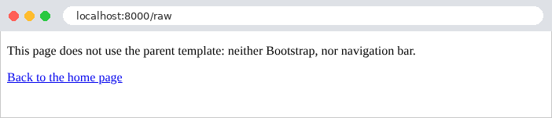
Como a captura de tela é estreita, os cards da equipe aparecem empilhados um abaixo do outro. A página da equipe, como aparece no navegador:
O navegador recebeu uma página completa: o template pai, o fragmento da barra de navegação, a página e os cards foram montados no servidor. As URLs das folhas de estilo foram calculadas por [{% static %}]: são URLs específicas do site. Você pode verificar se as folhas de estilo estão sendo servidas corretamente (a opção [-I] do [curl] exibe apenas os cabeçalhos da resposta ao enviar uma requisição HEAD):
O primeiro arquivo vem da pasta [common/static], o segundo da pasta [static] do exemplo: para o navegador, não há diferença entre eles. O tipo de conteúdo foi inferido da extensão do arquivo ([text/css]): um navegador rejeita uma folha de estilo declarada como outra coisa. Por fim, uma tentativa de acessar as pastas de arquivos estáticos:
(as opções [-s -o /dev/null -w "%{http_code}\n"] exibem apenas o código da resposta; no [Windows], usa-se [-o NUL]). A URL solicita o arquivo [config/settings.py] do exemplo, subindo duas pastas (as barras [/] são codificadas como [%2F], para que nem o [curl] nem o navegador simplifiquem o caminho por conta própria). [Django] falhou: o console exibe a exceção [SuspiciousFileOperation], com a mensagem “The joined path (...) is located outside of the base path component.” O código 500 indica uma exceção não tratada; o ponto essencial é que o arquivo não foi enviado.
4.4. Exemplo 16: estendendo a linguagem de templates
Um template costuma precisar formatar valores: um valor monetário com sua moeda, uma data escrita por extenso ou um texto em maiúsculas. Esse código não pertence à view (que não cuida da apresentação), e a DTL não permite escrevê-lo no template (veja a introdução deste capítulo). Em vez disso, ele é escrito em [Python], em uma biblioteca de tags e filtros: um módulo que adiciona seus próprios filtros e tags à linguagem de templates. Os componentes que geram trechos de HTML a partir de dados — as inclusion tags — também são escritos em [Python].
4.4.1. A biblioteca: pages/templatetags/formats.py
Uma biblioteca de tags é um módulo contido no pacote [templatetags] de uma aplicação (que deve estar declarada em [INSTALLED_APPS]); o nome do módulo ([formats]) é o nome que um template atribuirá a [{% load formats %}]:
- linhas 4–5: duas funções da biblioteca [Babel] (veja a introdução), que conhece as convenções de escrita de números, valores monetários e datas de todos os países (ela usa dados do projeto Unicode CLDR);
- linha 7: [get_language] define o idioma ativo para a requisição atual ([fr], [en]); veremos quem o define;
- linha 10: o objeto [register], uma [template.Library], armazena os filtros e as tags do módulo. O nome da variável é fixo: é onde o [Django] os procura;
- Linhas 17–19: um filtro é uma função, registrada pelo decorador [@register.filter] com o próprio nome, [money]. Seu primeiro parâmetro é o valor filtrado; o segundo, opcional, é o parâmetro do filtro no template ([price|money:"USD"]): aqui, a moeda, designada por seu código internacional ([EUR], [USD]). O filtro formata um valor recebido em centavos (veja o exemplo 06). A formatação depende do idioma: em francês, [1 149,90 €] (espaço para separar os milhares, vírgula decimal, símbolo da moeda após o valor); em inglês, [€1,149.90];
- linhas 23–25: formatação de datas: o formato [full] escreve a data por extenso, incluindo o dia da semana ([Sunday, September 27, 2026]);
- linhas 31–36: uma inclusion tag, definida por [@register.inclusion_tag]: uma função que calcula um contexto e um template (aqui, [tags/link.html]) que o exibe. Em um template, [{% link 'products' '/products' 'Products' %}] chama a função com esses três parâmetros e depois insere o template, construído com o dicionário que ela retornou. Com [takes_context=True], a função recebe o contexto do template chamador como primeiro parâmetro: ela encontra ali a requisição e determina se o link aponta para a página atual ([startswith] verifica o início de uma string);
- linhas 40–42: uma segunda inclusion tag, sem o contexto: um badge.
Uma biblioteca também pode fornecer tags “simples” ([@register.simple_tag]), que retornam um valor, e tags completas, que analisam seu próprio conteúdo (como [{% if %}]): isso é menos comum. Os templates das duas inclusion tags:
O link da página atual recebe a classe [active] do [Bootstrap], que o destaca. [{% url route %}] gera a URL de uma rota cujo nome está armazenado em uma variável. O badge é verde ([text-bg-success]) ou vermelho ([text-bg-danger]) conforme o estoque. O pacote [templatetags] também tem seu arquivo [__init__.py]; sem ele, não seria um pacote.
4.4.2. O idioma de cada requisição: config/middleware.py
Cada requisição tem um idioma ativo, que, por padrão, é o indicado na configuração [LANGUAGE_CODE]. Aqui, o parâmetro [?lang=fr] da URL seleciona o francês; o inglês é o idioma padrão. Um middleware (exemplo 03) o define antes de cada view usando a função [translation.activate]: esse é o idioma que [get_language] retornará — o idioma em que o [Django] formata números e datas e traduz suas próprias mensagens (como as mensagens de erro de formulários). O idioma ativo é específico da thread de execução que trata a requisição: duas requisições simultâneas podem ter idiomas diferentes. Ele não é redefinido de uma requisição para a seguinte; por isso o middleware o define a cada requisição, até para o inglês. O capítulo sobre internacionalização substituirá esse middleware pelo do [Django] , o [LocaleMiddleware], e usará esse mesmo idioma para traduzir o texto.
4.4.3. Configuração: config/settings.py
- linhas 15–18: os idiomas da aplicação;
- linhas 20–25: a aplicação [pages] deve ser declarada; o [Django] procura os pacotes [templatetags] dentro das aplicações de [INSTALLED_APPS];
- Linhas 27–29: o middleware de idioma.
4.4.4. A view: pages/views.py
As views passam valores brutos aos templates: uma data ([date.today()], a data de hoje) e valores em centavos. A formatação fica a cargo dos templates. O estoque total, porém, é um cálculo: ele é feito em [Python] (linha 24), já que a DTL não pode efetuar cálculos. A classe [Product] combina um nome, um preço (em centavos; veja o exemplo 06) e uma quantidade em estoque.
4.4.5. Os templates
- linha 1: o fragmento carrega sozinho a biblioteca de que precisa: as bibliotecas [{% load %}] não são repassadas aos templates incluídos nem aos templates que estendem um pai. Cada template carrega suas próprias bibliotecas;
- linha 6: o mesmo que com a tag [link], escrito diretamente no template, com uma condição. [request.resolver_match] descreve o resultado do roteamento da requisição atual: [url_name] é o nome da rota. A tag evita ter de repetir a condição para cada link;
- linha 8: a chamada da tag, com seus três parâmetros, separados por espaços;
- linha 10: [{% url %}] gera apenas o caminho: os parâmetros da URL são adicionados manualmente ([?lang=fr]).
- Linha 2: a página carrega duas bibliotecas: [i18n], a biblioteca de internacionalização do [Django], e a nossa;
- linha 8: nosso filtro [long_date];
- Linhas 10–11: a tag [{% get_current_language as language %}], da biblioteca [i18n], armazena o idioma ativo em uma variável do template.
- linha 13: um filtro do [Django];
- linhas 14–15: nosso filtro [money], primeiro com sua moeda padrão, depois com um parâmetro;
- linha 17: a chamada da tag [badge];
- linha 22: o estoque total, calculado pela view.
O template pai [layout.html] é uma versão simplificada do Exemplo 15; seu atributo [lang] recebe o idioma ativo ([<html lang="{{ language }}">], após [{% get_current_language as language %}]).
4.4.6. Execução
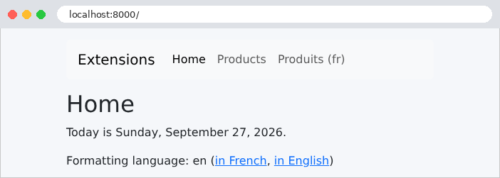

A mesma página, com o parâmetro [?lang=fr]. Apenas a formatação dos números muda: o próprio texto está fixo nos templates. O capítulo sobre internacionalização também traduzirá o texto.

Um trecho do HTML produz:
4.5. Exemplo 17: um formulário GET
Um formulário HTML envia seus campos ao servidor de uma de duas maneiras, conforme seu atributo [method]:
- [method="get"]: os campos são adicionados à URL como parâmetros ([/search?keyword=le&genre=novel]). Esse é o método usado por um formulário que faz uma consulta: uma pesquisa ou um filtro. A URL que contém os resultados pode ser salva como favorito, compartilhada ou recarregada com segurança;
- [method="post"]: os campos são incluídos no corpo da requisição (veja o Exemplo 11). Esse é o método usado por um formulário que modifica dados: um cadastro, uma inclusão ou uma exclusão.
Este primeiro formulário é uma pesquisa de livros. Ele é codificado à mão em HTML dentro do template: os exemplos seguintes usarão os templates de formulário do [Django].
4.5.1. O modelo do template: books/viewmodels.py
- Linhas 14–19: o modelo do template contém a entrada do usuário, que o formulário exibirá, a lista de gêneros sugeridos e os resultados.
4.5.2. A view: books/views.py
- linhas 9–16: duas constantes do módulo: a lista de gêneros e a lista de livros. Em uma aplicação real, elas viriam de um banco de dados;
- linhas 20–21: uma única view referenciada por duas rotas ([config/urls.py]: [""] e ["search"], chamadas [books_home] e [books_search]). Na primeira visita ([/]), não há parâmetros, e todos os livros são exibidos;
- linhas 22–23: os campos do formulário são lidos como parâmetros da URL (exemplo 07), com uma string vazia como valor padrão;
- linhas 24–28: a filtragem, usando uma list comprehension com uma condição ([if]): um livro é selecionado se a palavra-chave estiver vazia ou aparecer em seu título ou autor (em minúsculas dos dois lados: [lower()] trata corretamente os caracteres acentuados) e se o gênero estiver vazio ou for igual ao do livro. Uma condição pode ocupar várias linhas, entre parênteses;
- linhas 29–31: o template.
4.5.3. O template: templates/books/search.html
- linha 6: a tag [<form>]. O atributo [action] é a URL para a qual o formulário é enviado; [method="get"] coloca os campos na URL. As classes do [Bootstrap] dispõem os campos em uma única linha;
- linha 8: um rótulo (label). Seu atributo [for] indica o identificador ([id]) do campo que ele descreve: clicar no rótulo coloca o cursor no campo, e os leitores de tela leem o rótulo junto com o campo;
- linha 10: um campo de entrada. Seu atributo [name] é o nome do parâmetro enviado ao servidor: esse é o vínculo entre o formulário e a view ([request.GET.get("keyword", "")]). O atributo [value] é o valor exibido: a entrada anterior, reexibida (e escapada por [{{ }}], o que é essencial em um atributo: uma entrada contendo aspas ["] fecharia o atributo);
- linhas 14–20: uma lista suspensa. Cada [<option>] tem um valor ([value]), enviado ao servidor, e um texto, exibido. A primeira opção, com valor vazio, significa “todos os gêneros”;
- linha 18: a opção selecionada na requisição anterior recebe o atributo [selected]. Esse é um atributo booleano: sua simples presença basta; ele não tem valor. A condição o define se for verdadeira e não define nada em caso contrário;
- linha 23: o botão de envio;
- linha 26: o número de resultados.
4.5.4. Execução

Vamos digitar [le] e selecionar o tipo [novel]:
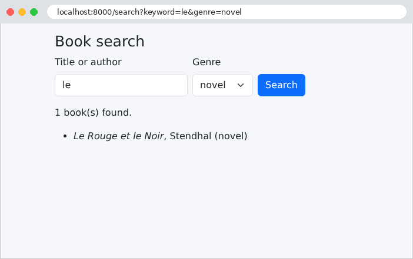
A URL da página de resultados contém os campos do formulário: [/search?keyword=le&genre=novel]. A resposta do formulário:
“Madame Bovary” não é selecionado: “le” não aparece nem no título nem no nome do autor.
4.6. Exemplo 18: campos de formulário
Este exemplo mostra todos os tipos de campo de um formulário HTML, enviado desta vez por POST. Ele demonstra como reexibir cada tipo de campo com seu valor atual, como o navegador envia os valores de cada campo e como o servidor verifica que um valor recebido é de fato uma das opções disponíveis. Escrever tudo isso à mão, como no Exemplo 17, seria demorado e repetitivo. Os formulários do [Django], que usamos no capítulo anterior para validar parâmetros, também podem ser exibidos: cada campo tem um widget — um objeto que cria seu campo de entrada em HTML, com o valor atual — e o formulário reexibe a entrada e os eventuais erros. Esta é a versão completa do que o curso de [Symfony] delegava ao seu componente Form, e do que o curso de [Flask] delegava ao [WTForms].
4.6.1. Listas: form/lists.py
As listas suspensas do formulário (tratamentos, países, hobbies, idiomas) são constantes de um módulo: em uma aplicação real, viriam de um banco de dados. Cada lista é composta de pares (valor, texto): o valor é o que é enviado ao servidor, e o texto é o que é exibido (exemplo 08). Um par é escrito entre parênteses: é uma tupla, uma sequência de valores que não pode ser modificada.
4.6.2. O formulário: form/forms.py
- Linhas 10–23: uma classe pai para nossos formulários, que atribui a cada campo de entrada a classe apropriada (CSS derivado do [Bootstrap]). Ela redefine o construtor ([__init__]), que recebe os mesmos parâmetros que o de [forms.Form] ([*args], [**kwargs], exemplo 08), e começa chamando-o ([super().__init__(...)]). O atributo [fields] do formulário é então um dicionário de seus campos; cada campo tem seu próprio widget ([field.widget]), cujo dicionário [attrs] contém os atributos HTML do campo de entrada. [isinstance] aceita uma tupla de classes: o widget é de uma dessas classes? Os botões de opção e as caixas de seleção recebem a classe [form-check-input], as listas recebem [form-select] e os demais recebem [form-control];
- Linhas 28–51: os campos, na ordem em que são exibidos. É preciso distinguir dois objetos: o campo ([forms.XxxField]) converte e valida o valor, como no capítulo anterior; seu widget ([forms.XxxInput], [forms.Select]...) desenha o campo de entrada. Cada campo tem um widget padrão, que é substituído pelo parâmetro [widget]. Por padrão, o rótulo de um campo é seu nome, formatado ([password] se tornaria “Password”, [name] “Name”); o parâmetro [label] o define;
- Linhas 31–32: um [ChoiceField] é uma lista suspensa. Com o widget [RadioSelect], ele se torna um grupo de botões de opção (seleção única). O parâmetro [error_messages] (exemplo 09) exibe a mensagem de erro de “campo obrigatório”;
- linha 34: um [CharField] (widget padrão: [TextInput], um [<input type="text">]), opcional. Um campo obrigatório ([required=True], o padrão) gera o atributo HTML [required], que o navegador verifica (exemplo 19);
- linha 36: uma senha (widget [PasswordInput], um [<input type="password">]), que nunca é devolvida à página: seu campo está sempre vazio quando exibido;
- linhas 38–39: uma data ([DateField]), cujo valor será um objeto [date] do tipo [Python]. O widget [DateInput] recebe o atributo [type="date"]: um campo [<input type="date">], para o qual o navegador exibe um calendário. Esse campo troca seu valor com o servidor no formato [yyyy-mm-dd], independentemente do formato em que o navegador o exibe ([DateField] aceita esse formato);
- linhas 41–42: um [MultipleChoiceField] (exemplo 10), desenhado pelo widget [CheckboxSelectMultiple]: caixas de seleção;
- Linha 44: um [ChoiceField] com seu widget padrão, [Select]: uma lista suspensa;
- Linhas 46–48: um [MultipleChoiceField] com seu widget padrão, [SelectMultiple]: uma lista de seleção múltipla, exibida em quatro linhas (o atributo HTML [size], especificado por [attrs]);
- linha 49: uma caixa de texto ([Textarea]), com duas linhas;
- linha 51: um campo oculto ([HiddenInput]).
O [Django] também fornece [EmailField] (exemplo 19), [IntegerField], [DecimalField], [URLField], [BooleanField] (uma única caixa de seleção), [FileField], [ImageField], [SlugField], [UUIDField], [JSONField]... e outros widgets: [EmailInput], [NumberInput], [CheckboxInput], [ClearableFileInput], [SelectDateWidget] (três listas: dia, mês, ano)...
4.6.3. Disposição dos campos: config/rendering.py e templates de formulário
Um formulário [Django] é gerado automaticamente por meio de templates: um template para o formulário inteiro, um para cada campo completo (rótulo, campo de entrada, dica, mensagens de erro) e um para cada tipo de widget. O [Django] fornece todos esses templates na aplicação [django.forms], com uma disposição neutra. Para obter a disposição do [Bootstrap], substituímos alguns deles. Primeiro, o [Django] deve procurar os templates de formulário, assim como os demais, nas pastas definidas pela configuração [TEMPLATES]: esse é o papel de um renderizador de formulários:
- linha 9: [TemplatesSetting] é o renderizador de formulários que procura seus templates usando o engine de templates do projeto: um template da pasta [templates] do projeto pode, portanto, substituir um template do [Django] com o mesmo nome. Nossa classe herda esse comportamento;
- Linha 11: o atributo [field_template_name] especifica o template de um campo completo: o nosso, [forms/field.html].
A configuração:
- linha 17: a aplicação [django.forms], que fornece os templates de formulário do [Django], em sua pasta [templates];
- Linhas 21–24: o middleware de proteção anti-CSRF (veja abaixo);
- linha 32: [APP_DIRS: True]: [Django] também procura templates na pasta [templates] de cada aplicação declarada, incluindo [django.forms]. As pastas de [DIRS] são verificadas primeiro: nossos templates têm precedência sobre os do [Django];
- linha 38: a configuração [FORM_RENDERER] indica nosso mecanismo de renderização.
O template de um campo completo:
O template recebe o campo a ser renderizado, [field] (um objeto [BoundField]: o campo, vinculado ao formulário e, portanto, ao seu valor e aos seus erros):
- Linhas 2–6: um grupo de botões de opção ou de caixas de seleção ([field.use_fieldset] se aplica a esses widgets) é cercado por um [<fieldset>], cuja legenda ([<legend>]) é o rótulo do grupo: é o que os leitores de tela esperam;
- linhas 8–10: outro campo tem um [<label>], vinculado ao campo de entrada por seu identificador ([id_for_label]: [id_name], por padrão [id_] seguido do nome do campo). [{{ field }}] define o campo de entrada usando o template de seu widget;
- linha 12: o texto de ajuda do campo (parâmetro [help_text] de um campo), se houver;
- linha 13: os erros do campo ([field.errors]), usando as classes do [Bootstrap] ([invalid-feedback]: texto vermelho, [d-block]: sempre visível). Seu identificador, [id_name_error], é o indicado pelo [Django] no atributo [aria-describedby] do campo de entrada, para que os leitores de tela leiam a mensagem junto com o campo;
- Linha 14: a tag de fechamento da tag aberta na primeira parte.
Por fim, dois templates de widget do [Django] são substituídos para que os botões de opção e as caixas de seleção sejam exibidos da mesma forma que no [Bootstrap], lado a lado:
Eles têm exatamente os mesmos nomes e caminhos que os templates do [Django] que substituem ([django/forms/widgets/...], encontrados na pasta [django/forms/templates] da biblioteca):
- [multiple_input.html] desenha o grupo: para cada opção ([widget.optgroups]: as opções, agrupadas; não temos subgrupos), uma [<div class="form-check form-check-inline">] que contém a opção, desenhada usando seu próprio template ([option.template_name]);
- [input_option.html] renderiza uma opção: o campo de entrada ([<input type="radio">] ou [<input type="checkbox">], usando o template do [Django] e [input.html]), seguido de seu rótulo.
Tudo isso precisa ser escrito uma única vez: os Exemplos 19, 21 e 28, bem como o estudo de caso, usam esses arquivos. Bibliotecas prontas, como [django-crispy-forms] e seu pacote [crispy-bootstrap5], ou [django-bootstrap5], fazem o mesmo; preferimos demonstrar o mecanismo.
4.6.4. A view: form/views.py
- linha 9: os valores iniciais do formulário: um dicionário, com um valor por campo (uma lista para um campo de vários valores);
- linha 14: uma única view para os dois métodos: GET exibe o formulário, POST o processa;
- linhas 16–19: em GET, um formulário não vinculado (sem dados), com seus valores iniciais (parâmetro [initial]): ele não é validado e não exibe nenhum erro;
- linhas 21–22: em POST, um formulário vinculado aos campos enviados ([request.POST]) e depois validado ([is_valid], capítulo anterior): cada campo converte seu valor (a data, as listas etc.), verifica que a seleção está entre as que foram oferecidas e aplica suas restrições;
- linhas 24–28: se o formulário for válido, seus dados são convertidos ([cleaned_data]) em um dicionário legível por humanos (usando a sintaxe [{key: value for ...}]): uma lista é escrita como texto, com seus elementos separados por vírgulas ([", ".join(...)]);
- Linha 31: para este exemplo, o que o navegador realmente enviou. O método [lists()] de um [QueryDict] (Exemplo 10) percorre os pares (nome, lista de todos os valores). A string [\n] é uma quebra de linha;
- linhas 32–37: o formulário vinculado é passado ao template, que o exibirá, junto com a entrada do usuário e os eventuais erros.
4.6.5. O template: templates/form/form.html
- Linha 5: a tag [<form>], digitada manualmente: o formulário do [Django] não a gera;
- linha 7: a tag [{% csrf_token %}] cria um campo oculto contendo o token anti-CSRF (veja abaixo);
- linha 9: [{{ form.title }}] refere-se ao campo [title] do formulário (um [BoundField]); seu método [as_field_group] o renderiza por completo usando o template [forms/field.html]: rótulo, campo de entrada (com seu valor atual) e mensagens de erro;
- linhas 10–20: os demais campos, dispostos conforme as classes de grade do [Bootstrap];
- linha 22: o campo oculto, do qual apenas o campo de entrada é renderizado;
- linha 26: a variável [received] só existe após um envio; uma variável ausente é “falsa”;
- linhas 32–34: os erros. [form.errors] é um dicionário, percorrido com [items] (sem parênteses, como na DTL): para cada campo, a lista de seus erros;
- linhas 39–41: um laço sobre um dicionário que percorre tanto as chaves quanto os valores.
Poderíamos ter escrito o formulário inteiro em uma única linha: [{{ form }}], que renderiza todos os campos em ordem usando o template do formulário (configuração do renderizador [form_template_name]). Ao processar os campos um a um, você pode dispô-los como quiser.
4.6.6. Proteção CSRF
Um ataque CSRF (Cross-Site Request Forgery) consiste em um site malicioso levar o navegador da vítima a enviar um formulário à nossa aplicação. O navegador inclui na requisição os cookies da nossa aplicação — e, portanto, a sessão do usuário autenticado —, de modo que a requisição parece legítima. A solução: todo formulário da nossa aplicação contém um token aleatório que o site malicioso não tem como conhecer.
O [Django] aplica isso a toda a aplicação por meio de um middleware, o [CsrfViewMiddleware] (linha 23 do arquivo [config/settings.py]). Quando uma página é gerada, a tag [{% csrf_token %}] escreve no campo oculto [csrfmiddlewaretoken], e o middleware envia, junto com a resposta, um cookie chamado [csrftoken], que contém um segredo. Para qualquer requisição que modifique dados (POST, PUT, PATCH, DELETE), antes de executar a view, o middleware verifica se o token enviado (no campo [csrfmiddlewaretoken] ou no cabeçalho [X-CSRFToken], no caso de uma requisição enviada via [JavaScript]) corresponde ao segredo do cookie. Um site malicioso não consegue ler o cookie do nosso site nem ver nossas páginas: ele não pode gerar um token válido. Se a verificação falhar, a view não é chamada: [Django] responde por conta própria com um erro 403. Essa é uma diferença significativa em relação ao [Symfony], cujo componente Form verificava o token de cada formulário e deixava a action decidir o que fazer em seguida: com o [Django], todas as requisições POST são protegidas, e uma view não pode esquecer de se proteger. O decorador [@csrf_exempt] isenta uma view dessa verificação (para uma API chamada por outros servidores, por exemplo).
4.6.7. Execução
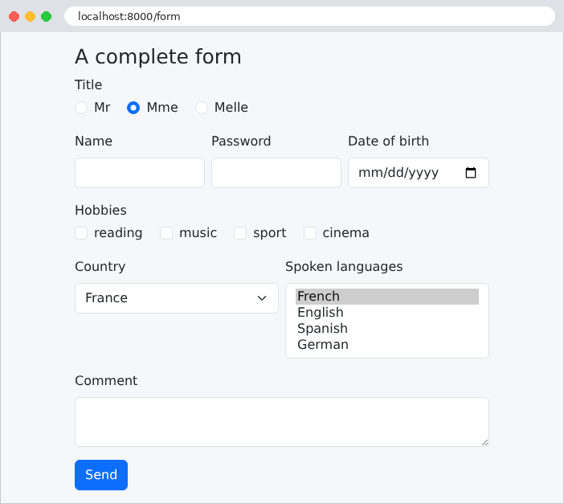
Os valores iniciais estão visíveis: o botão de opção “Mme”, o país “France” e o idioma “French”. O HTML gerado (trechos):
O [Django] escreveu tudo: os identificadores ([id_title_1]), os rótulos associados aos seus campos, os nomes dos campos (as caixas de seleção têm todas o nome [hobbies]: o navegador enviará um parâmetro repetido, exemplo 10), os atributos [checked] e [selected] para os valores atuais, o atributo [required] para os campos obrigatórios e as classes do [Bootstrap]. O primeiro campo oculto contém o token anti-CSRF; ele é diferente a cada página (é “mascarado” por um número aleatório, para que um espião na rede não consiga adivinhar o segredo comparando várias páginas). Vamos preencher o formulário e enviá-lo:

A página mostra o que o servidor recebeu: um parâmetro por campo, com vários valores para as caixas de seleção e para a lista suspensa; a senha foi enviada, mas não é exibida novamente em seu campo. O navegador exibiu a data segundo suas próprias configurações, mas a enviou no formato [yyyy-mm-dd]; o template a formatou no estilo inglês, [May 14, 1990], como qualquer data que ele exibe. O campo oculto [token] foi devolvido exatamente como está: é assim que informações que o usuário não vê circulam de ida e volta (o estudo de caso usa isso para o número de versão de um registro). No entanto, um campo oculto não é um campo protegido: o usuário pode modificá-lo usando as ferramentas de desenvolvedor de seu navegador, e o servidor deve validá-lo como qualquer outro campo. O token anti-CSRF também está incluído entre os campos recebidos; ele não faz parte dos dados do formulário.
Agora vamos enviar um formulário usando o [curl], sem token e com um país que não constava da lista:
A requisição não passou do middleware: a view não foi chamada, e o console do servidor indica isso:
Em um navegador, a página de erro do [Django] explica o motivo da rejeição (no modo de depuração):

Para que o token seja aceito, o [curl] deve se comportar como um navegador: primeiro solicitar o formulário, guardando o cookie [csrftoken] (opção [-c], que salva os cookies recebidos em um arquivo), depois reenviar o cookie (opção [-b]) e o token lido na página:
(o token é o da página recebida pela primeira requisição). Desta vez, a view foi chamada, e o formulário é inválido por dois motivos: nenhum tratamento foi enviado, e o país [xx] não está entre as opções. Esta última verificação é feita pelo próprio campo [ChoiceField], sem que a tenhamos pedido: um usuário malicioso poderia enviar qualquer coisa, não apenas o que a página sugeriu. Aqui, a view retorna o formulário inválido com código de status 200; o exemplo seguinte escolherá um código de status mais adequado.
4.7. Exemplo 19: Validação de formulário
Um formulário de cadastro, em que cada campo tem suas próprias restrições. Se ocorrer um erro, o formulário é exibido novamente com o que o usuário digitou e uma mensagem abaixo de cada campo inválido. Acrescentamos uma regra que se aplica a dois campos: a senha e sua confirmação devem ser iguais.
Os arquivos [config/settings.py], [config/rendering.py] e [templates/forms/field.html] são os mesmos do exemplo 18.
4.7.1. O formulário: registration/forms.py
- linhas 7–11: a classe-mãe do exemplo 18, simplificada: todos os campos são campos de entrada;
- linhas 17–19: o nome é obrigatório e não pode ter mais de 20 caracteres. Cada erro recebe sua própria mensagem de acordo com seu código (exemplo 09). O parâmetro [max_length] tem dois efeitos: o campo verifica o comprimento (no servidor) e seu widget define o atributo HTML [maxlength], que limita a digitação no navegador ([min_length] faz o mesmo, com o atributo [minlength]);
- linhas 21–23: um [EmailField] verifica se um endereço é válido e exige um nome de domínio totalmente qualificado ([example.com], e não [example]). Seu widget, [EmailInput], gera um [<input type="email">], que o navegador pode validar;
- linhas 25–29: um [IntegerField] produz um [<input type="number">], com os atributos [min] e [max] derivados de [min_value] e [max_value], e converte a entrada em um inteiro. Uma entrada que não seja um inteiro produz o erro [invalid];
- linhas 30–35: a senha (com pelo menos 6 caracteres) e sua confirmação, dois campos [CharField] que usam o widget [PasswordInput]. Um parâmetro pode ocupar várias linhas;
- linhas 39–47: o método [clean] valida o formulário inteiro depois da validação de cada campo (e de seus métodos [clean_<field>], exemplo 12). [super().clean()] retorna [cleaned_data], que contém apenas os campos válidos: [data.get("password")] é igual a [None] se a senha já foi rejeitada (curta demais). A comparação é feita somente se os dois campos forem válidos; se forem diferentes, [add_error] associa um erro ao campo [confirmation] ([add_error(None, "...")] o associaria ao próprio formulário: um erro “geral”, retornado por [non_field_errors()]). Essa é a maneira de validar uma regra que envolve vários campos.
4.7.2. A view: registration/views.py
- Linha 13: o parâmetro [?html5=true] ativa a validação do navegador (veja abaixo);
- linhas 15–20: um formulário vinculado aos campos enviados. Se for válido, a página de boas-vindas recebe seus dados (o exemplo seguinte mostrará que é melhor redirecionar após um POST bem-sucedido);
- linhas 23–24: caso contrário, o formulário é exibido novamente, com o que foi digitado e os eventuais erros, junto com o código 422 (Unprocessable Content: “a requisição está bem formada, mas seu conteúdo é inválido”);
- linhas 26–27: na primeira exibição, um formulário vazio, não vinculado.
O formulário inválido é, portanto, exibido novamente pela própria view do POST, que mantém o que foi digitado e os erros: essa é a abordagem padrão do [Django], assim como do [Symfony]. Outros frameworks, como o [Laravel], respondem com um redirecionamento para a página do formulário, preservando o que foi digitado e os erros na sessão para a requisição seguinte.
4.7.3. Templates
- linhas 5–9: um link para ativar ou desativar a validação do navegador;
- linha 11: o atributo [novalidate] desativa a validação do navegador: o formulário é enviado como está, e somente o servidor o valida. É isso que queremos observar primeiro. O formulário não tem o atributo [action]: ele é enviado para a URL da página atual;
- linhas 14–16: um laço sobre o próprio formulário: ele percorre seus campos, na ordem em que foram declarados, e cada campo é renderizado por completo;
- linhas 21–26: o bloco [page_bottom], definido pelo template pai (veja abaixo). [form.errors] fica vazio antes do envio ou se tudo for válido. Se o formulário contiver erros, uma mensagem geral aparece em um campo cujo estilo é definido por [static/css/styles.css] (exemplo 15). O atributo [role="alert"] sinaliza isso para os leitores de tela.
- Linha 17: um segundo bloco, [page_bottom], vazio por padrão: um template pode ter quantos blocos forem necessários.
[registration] é o dicionário dos dados validados: os espaços foram removidos do nome (veja abaixo) e a idade é um inteiro.
4.7.4. Execução
Vamos enviar um formulário cheio de erros: um nome formado por espaços, um endereço sem domínio completo, uma idade de 12 anos, uma senha curta demais e uma confirmação diferente:

O que foi digitado foi mantido (exceto as senhas), e cada erro é sinalizado abaixo do campo correspondente. O nome formado por espaços é sinalizado como ausente: um ***[CharField] remove os espaços que cercam cada entrada (parâmetro ***[strip]***, exemplo 08) e exibe novamente o valor já limpo. A confirmação, porém, não contém erros, embora seja diferente da senha: como a senha foi rejeitada, o método [clean]* não as comparou. A URL é a do formulário, [/register]: a página foi exibida pela view em resposta ao POST. Com o [curl], fornecendo o token anti-CSRF como no exemplo 18, também é possível enviar algo que um navegador não enviaria — uma idade não numérica:
Vemos o que foi digitado exibido novamente, os atributos HTML5 ([required], [min], [max]), a mensagem de erro [invalid] e os atributos [aria-invalid] e [aria-describedby] — que o [Django] adiciona automaticamente a um campo com erro — e que vinculam o campo à sua mensagem para os leitores de tela.
4.7.5. Validação do navegador
Vamos remover o atributo [novalidate] clicando no link “Ativar” (parâmetro [?html5=true]). O navegador passa então a verificar os atributos [required], [type="email"], [min], [max], [maxlength]... antes de enviar o formulário e exibe suas próprias mensagens em um balão abaixo do primeiro campo com erro (“Preencha este campo”, “O valor deve ser maior ou igual a 18” etc.): o formulário não é enviado enquanto houver erro. O [Django] gerou esses atributos automaticamente a partir dos campos: [required] para todo campo obrigatório, [maxlength] e [minlength] a partir de [max_length] e [min_length], [min] e [max] a partir de [min_value] e [max_value], [type="email"] e [type="number"] a partir dos widgets. Eles sempre respeitam, portanto, as restrições do servidor. Somente a regra do método [clean] (confirmação) não é tratada pelo navegador.
Essa validação é prática para o usuário: é imediata, sem ida e volta ao servidor. Mas não substitui a validação do servidor: um usuário pode desativá-la, e um programa como o [curl] a ignora por completo. A regra é absoluta: o servidor sempre valida; a validação do navegador é apenas uma comodidade adicional.
Por fim, uma entrada correta. O nome, digitado com espaços dos dois lados, foi limpo pelo formulário:

4.8. Exemplo 20: O padrão Post/Redirect/Get
Quando uma view POST responde com uma página, essa página é o resultado de um POST. Se o usuário a recarrega (pressiona [F5]), o navegador reenvia o POST, após um aviso que poucas pessoas leem: o comando é enviado duas vezes e a mensagem é postada duas vezes. O padrão Post/Redirect/Get (PRG) evita esse problema: uma view POST bem-sucedida não renderiza uma página; ela responde com um redirecionamento (exemplo 04) para uma página GET, que o navegador solicita imediatamente. Recarregar essa página simplesmente executa o GET de novo.
Resta um problema: a página GET gostaria de exibir uma mensagem (“a tarefa foi adicionada”), mas quem conhece essa mensagem é a view POST, e ela não pode passar uma variável para uma requisição que ainda não ocorreu. A solução: uma mensagem flash, postada pela view POST, mantida até ser lida, exibida e depois descartada. O [Django] as fornece por meio de sua aplicação [django.contrib.messages].
4.8.1. Configuração: config/settings.py
- linha 17: a aplicação de mensagens;
- linhas 21–26: seu middleware, [MessageMiddleware], que lê as mensagens pendentes no início de cada requisição e, no final, armazena as que não foram lidas (e as novas, se houver);
- linha 30: a configuração [MESSAGE_STORAGE] determina onde as mensagens são armazenadas entre as requisições: neste caso, em um cookie (veja abaixo). Por padrão, o [Django] tenta primeiro o cookie e, se a mensagem for grande demais, a sessão (veja o capítulo sobre escopos); nosso exemplo não tem sessão;
- Linhas 37–40: o processador de contexto de mensagens: ele disponibiliza a variável [messages] para todos os templates.
4.8.2. O serviço: tasks/service.py
A lista de tarefas é compartilhada por todos os usuários e precisa persistir de uma requisição para a outra. Vimos isso nos exemplos 01 e 06: em [Python], o servidor permanece na memória de uma requisição para a outra. Uma simples variável de módulo é, portanto, suficiente. Os leitores do curso de [Symfony] vão se lembrar de que, em [PHP], a lista precisava ser armazenada em um cache ou em um arquivo.
- Linha 8: a lista, uma variável de módulo. Ela existe enquanto o processo do servidor estiver em execução: é perdida quando o servidor é desligado ou reiniciado (após uma alteração de código, durante o desenvolvimento). E se o servidor de produção executar vários processos (o que é prática comum: um por processador, por exemplo), cada um terá sua própria lista. Uma aplicação real armazenaria, portanto, a lista em um banco de dados (Capítulo 7);
- Linha 12: o servidor de desenvolvimento processa várias requisições ao mesmo tempo, cada uma em sua própria thread. Duas atualizações simultâneas poderiam entrar em conflito. Um lock ([threading.Lock]) garante que somente uma thread por vez execute o código que ele protege;
- linhas 15–18: a função retorna uma cópia da lista, criada sob a proteção do lock;
- linhas 21–24: a instrução [with] adquire o lock, executa o bloco e depois libera o lock — em todos os casos, mesmo que uma exceção interrompa o bloco. Um objeto que pode ser usado por [with] é chamado de gerenciador de contexto; os arquivos são outro exemplo ([with open(...) as f:] fecha o arquivo no fim do bloco).
O serviço é um módulo, não uma classe: suas funções são chamadas por [service.list_tasks()] e [service.add(...)]. Essa é a maneira mais simples, em [Python], de ter um único objeto compartilhado por toda a aplicação (exemplo 06).
4.8.3. Views: tasks/views.py
- linhas 16–22: a entrada é validada manualmente para manter o exemplo conciso ([strip] remove os espaços ao redor). Uma entrada inválida é exibida novamente sem redirecionamento: não há nada a proteger contra um envio duplicado, já que nada foi modificado;
- linha 25: [messages.success] registra uma mensagem flash de nível “success” (também existem [debug], [info], [warning] e [error]: o nível permite exibir as mensagens de maneiras diferentes);
- linha 27: o redirecionamento para a página GET, chamada [tasks] (exemplo 04);
- linhas 31–34: o contraexemplo: uma página em resposta a um POST. O operador [or] retorna seu operando da esquerda se ele for “verdadeiro” (aqui, uma string não vazia) e o operando da direita caso contrário.
4.8.4. Os templates
- Linhas 14–16: [messages] contém as mensagens flash pendentes. Percorrê-las as marca como lidas: o middleware as removerá no final da requisição; uma mensagem flash é exibida apenas uma vez. A classe [alert alert-success] do [Bootstrap] exibe a mensagem em uma caixa verde. Cada mensagem também tem um nível ([message.level]) e rótulos ([message.tags]: [success]...), que determinam sua apresentação.
- linha 11: o token anti-CSRF: o middleware [CsrfViewMiddleware] está ativo (linha 22 do arquivo [config/settings.py]);
- linha 12: a variável [label] só existe após uma entrada inválida: uma variável ausente é exibida como uma string vazia;
- linha 15: o atributo [formaction] de um botão envia o formulário para um endereço diferente do de seu atributo [action]: um único formulário pode, assim, acionar duas views diferentes;
- Linhas 17–22: a mensagem de erro e o aviso do contraexemplo.
4.8.5. Onde as mensagens flash são armazenadas?
Entre a requisição POST e a requisição GET seguinte, a mensagem precisa ficar armazenada em algum lugar. Escolhemos um cookie. Vamos examiná-lo com o [curl], salvando os cookies em um arquivo (opções [-c] e [-b], exemplo 18), depois de solicitar a página para obter o token anti-CSRF:
A resposta ao POST é um redirecionamento (código de status 302, cabeçalho [Location]), acompanhado do cookie [messages]. Esse cookie é [HttpOnly] (o [JavaScript] da página não consegue lê-lo) e [SameSite=Lax] (o navegador não o envia com uma requisição POST originada em outro site). Seu valor é composto de três partes, separadas por dois-pontos: os dados, uma data (codificada em base 62) e uma assinatura. Os dados são a lista de mensagens, em JSON, codificada em base 64 (aqui não está comprimida: o [Django] só comprime os dados quando isso os torna menores, e um valor comprimido começa com um ponto). Decodificados, eles resultam em:
Ele mostra o nível da mensagem (25: success) e seu texto. O conteúdo do cookie, portanto, não é secreto: qualquer pessoa pode decodificá-lo. Mas é assinado: a assinatura é calculada a partir dos dados e da chave secreta da aplicação ([SECRET_KEY], exemplo 01). Se o navegador devolver um cookie modificado, a assinatura deixa de corresponder e o [Django] o ignora: um usuário não pode fabricar mensagens falsas. Vamos seguir o redirecionamento devolvendo o cookie:
A mensagem é exibida; o middleware, ao ver que ela foi lida, exclui o cookie (um cookie vazio que expirou em 1970). Uma nova requisição GET não exibiria mais a mensagem. O cabeçalho [Vary: Cookie] avisa aos caches que a resposta depende dos cookies da requisição. A lista de tarefas, por sua vez, fica armazenada na memória do servidor.
4.8.6. Execução
Adição de uma tarefa: o navegador seguiu o redirecionamento; a URL na barra corresponde à página GET, que pode ser recarregada com segurança.

Uma entrada inválida, exibida novamente com sua mensagem de erro:
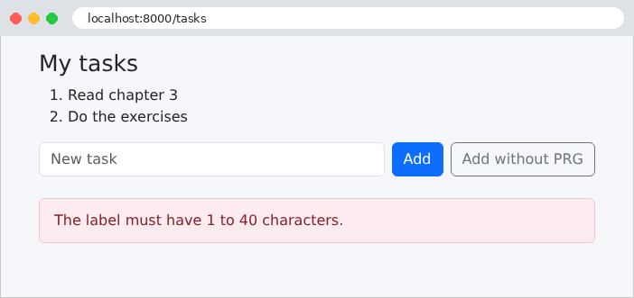
O contraexemplo: a página é a resposta a um POST, e sua URL é [/tasks/without-prg]. Se você clicar em [F5], o navegador pergunta se você deseja reenviar o formulário; se você concordar, a tarefa é adicionada uma segunda vez.
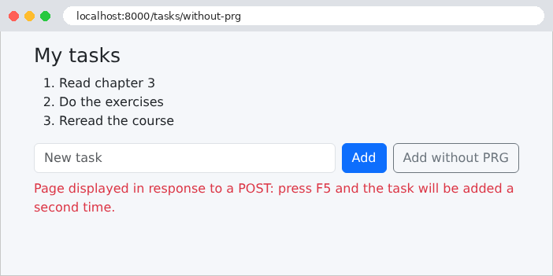
4.9. Exemplo 21: Links, botões e confirmação
Um princípio do protocolo HTTP: uma requisição GET não altera nada. Navegadores, mecanismos de busca e ferramentas que pré-carregam páginas seguem links livremente, sem pedir permissão ao usuário. Um link de “exclusão” ([<a href="/contacts/2/delete">]) seria, portanto, perigoso: um robô que percorresse o site excluiria tudo. Em uma aplicação web:
- a visualização é feita por meio de um link ([<a href>]), que envia uma requisição GET;
- a edição (salvar, duplicar, excluir) é feita por meio de um botão colocado em um formulário, protegido por um token anti-CSRF.
Este exemplo gerencia uma lista de contatos e exibe uma janela de confirmação antes de cada exclusão.
4.9.1. Simulação de método: config/middleware.py
Um formulário HTML só consegue enviar requisições GET e POST. No entanto, o protocolo HTTP admite outros métodos: DELETE para exclusão e PUT e PATCH para atualização. Muitos frameworks contornam essa limitação: um formulário POST que contém um campo oculto [_method], com o valor [DELETE] (ou [PUT], [PATCH]), é tratado como uma requisição desse método. Isso é conhecido como method spoofing. O [Symfony] oferecia isso como opção; o [Django] não oferece. Vamos implementá-lo como um middleware:
- linha 6: um atributo de classe: o conjunto ([set], delimitado por chaves) dos métodos aceitos;
- linhas 11–12: [__call__] repassa a requisição sem fazer nada;
- linhas 17–22: o método [process_view]: o [Django] o chama após o roteamento, imediatamente antes de chamar a view, com a view selecionada e seus parâmetros (o capítulo sobre o ciclo de vida tratará disso em detalhes). Se a requisição for um POST cujo campo [_method] indica um dos métodos aceitos, o middleware substitui o método na requisição. Retornar [None] permite que a requisição continue seu caminho.
Por que [process_view] e não [__call__]? Por causa da proteção anti-CSRF. O middleware [CsrfViewMiddleware] faz sua validação dentro do próprio método [process_view], que é chamado antes do nosso, pois ele o precede na configuração [MIDDLEWARE]. O token é, portanto, validado na requisição POST, antes que a transformemos em DELETE. É o que afirma o comentário no arquivo [config/settings.py]:
- linhas 23–27: três middlewares: a proteção anti-CSRF, as mensagens (exemplo 20) e a simulação de método, nessa ordem;
- linha 44: a engine de renderização de formulários do exemplo 18.
4.9.2. O serviço: contacts/service.py
Os contatos são armazenados em memória, assim como as tarefas do exemplo 20. Cada contato é um objeto imutável [Contact] (um ID, um nome, um telefone, arquivo [contacts/viewmodels.py]). Alguns pontos sobre [Python]:
- linha 12: o último identificador atribuído;
- linhas 27–36: um contato é imutável; criamos um novo, que substitui o antigo na lista. [enumerate] percorre uma lista em pares (posição, elemento);
- linhas 39–47: uma função que atribui um valor a uma variável de módulo deve declará-la com [global] (linha 42): sem essa palavra-chave, a atribuição [_last_id += 1] criaria uma variável local da função (e falharia aqui, pois lê seu valor antes de atribuí-lo). Ler uma variável de módulo, ou modificar a lista a que ela se refere ([_contacts.append(...)]), não exige nada disso;
- linha 55: [pop(i)] remove da lista o elemento da posição [i] e o retorna;
- As funções retornam [None] para um contato inexistente: cabe à view decidir a resposta.
4.9.3. O formulário de registro: contacts/forms.py
Os dois campos são obrigatórios e têm a classe "[form-control]" do "[Bootstrap]", atribuída diretamente a seu widget. Os botões não fazem parte de um formulário do "[Django]": eles são escritos diretamente no template.
4.9.4. Views: contacts/views.py
- linhas 13–16: uma função utilitária — um contato inexistente resulta em uma resposta 404 que encerra a view;
- linhas 20–22: a view GET da lista, que não modifica nada;
- linhas 27–48: o registro de um contato. Em GET, exibe o formulário preenchido com as informações do contato; em POST, processa o formulário; em DELETE, exclui o contato. A mesma URL [/contacts/2] serve, assim, para visualizar, salvar e excluir. O decorador [require_http_methods] é verificado quando a view é chamada, isto é, depois de [process_view]: ele de fato enxerga o método DELETE;
- linhas 35–37: um formulário inválido é exibido novamente;
- linhas 42–47: um formulário pode ter vários botões de envio. Quando o formulário é enviado, o navegador envia, além dos campos, o nome (atributo [name]) do botão clicado, e somente o desse botão. [in] verifica a presença de uma chave em um dicionário: ["duplicate" in request.POST] é verdadeiro se o formulário foi enviado pelo botão [duplicate]. Dependendo do botão, a view duplica ou salva o contato;
- linha 48: nos dois casos, o fluxo PRG (exemplo 20), com uma mensagem flash;
- linhas 52–55: a exclusão. Ela não precisa verificar o token anti-CSRF: o [CsrfViewMiddleware] já o fez antes. A ausência de token, ou um token inválido, teria interrompido a requisição com um erro 403.
4.9.5. Os templates
- linha 13: um link, apresentado como botão pelas classes do [Bootstrap] ([btn]...): a aparência não tem relação alguma com o método HTTP. [{% url 'contacts_details' contact.id %}] coloca o ID no caminho: [/contacts/2];
- linhas 15–21: um formulário para cada botão “Excluir”, sem outros campos além do token e do método. A classe [d-inline] o exibe na mesma linha que o link. O atributo [data-confirmation] contém a mensagem de confirmação: os atributos [data-...] não têm função própria e se destinam ao [JavaScript] da página;
- linha 17: o token anti-CSRF;
- linha 19: o campo oculto [_method], que transformará esse POST em uma requisição DELETE.
- linhas 11–12: os dois botões de envio do formulário, cada um com seu próprio nome;
- linha 13: o link para voltar à lista.
4.9.6. A janela de confirmação
O navegador pode exibir uma caixa de confirmação (função [JavaScript] [confirm]), mas ela é pouco atraente e sua aparência depende do navegador. Aqui usamos uma janela modal do [Bootstrap], exibida por algumas linhas de [JavaScript]. A janela é um fragmento, incluído no template pai e, portanto, presente — embora oculto — em todas as páginas:
- linha 2: a classe [d-none] do [Bootstrap] oculta o elemento;
- linhas 3–4: o fundo cinza e, em seguida, a janela são desenhados pelas classes do [Bootstrap];
- linha 11: a posição da mensagem;
- linhas 14–15: os dois botões, do tipo [button] (e não [submit]: eles não enviam nenhum formulário), distinguidos por seu atributo [data-action].
- Linhas 12–14: as mensagens flash (exemplo 20);
- linha 20: a janela, incluída em todas as páginas;
- linha 22: o script, colocado no final da página: quando ele é executado, os elementos que procura já existem. É um arquivo estático, armazenado na pasta [static/js].
O script [static/js/app.js]:
- linha 3: o código está envolvido em uma função anônima executada imediatamente; suas variáveis não interferem nas dos outros scripts da página;
- linhas 4–6: a janela, o local da mensagem e o formulário que aguarda confirmação;
- Linhas 9–16: para cada formulário que tem o atributo [data-confirmation], o evento [submit] — disparado quando o formulário é enviado — é interceptado. [preventDefault()] suspende o envio; o formulário fica em espera e sua mensagem ([dataset.confirmation], o valor do atributo [data-confirmation]) é exibida na janela que aparece;
- linhas 19–27: um único handler para os cliques na janela: [event.target] é o elemento clicado; seu atributo [data-action] indica de qual botão se trata. “Sim” envia o formulário pendente com o método [submit()], que — diferentemente do clique em um botão — não dispara o evento [submit] (caso contrário, a janela reapareceria); “Não” oculta a janela.
Sem [JavaScript], o formulário é simplesmente enviado sem confirmação: a página continua utilizável. Isso é o aprimoramento progressivo: o [JavaScript] acrescenta comodidade, mas a aplicação não depende dele.
4.9.7. Execução
A lista de contatos:
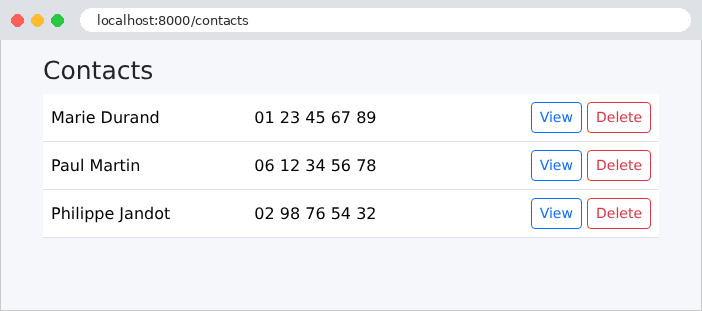
Clicar em “Excluir” exibe a janela de confirmação:

Após a confirmação, a requisição DELETE (simulada), o redirecionamento e a mensagem pop-up:
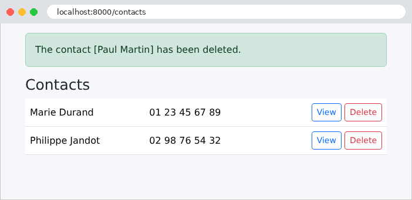
O registro de um contato, com seus dois botões de envio:

Uma requisição sem token anti-CSRF é rejeitada, e um contato inexistente retorna um erro 404:
As páginas de erro continuam sendo as detalhadas do modo de depuração do [Django]. O capítulo sobre o ciclo de vida da requisição mostrará como substituí-las por páginas personalizadas.